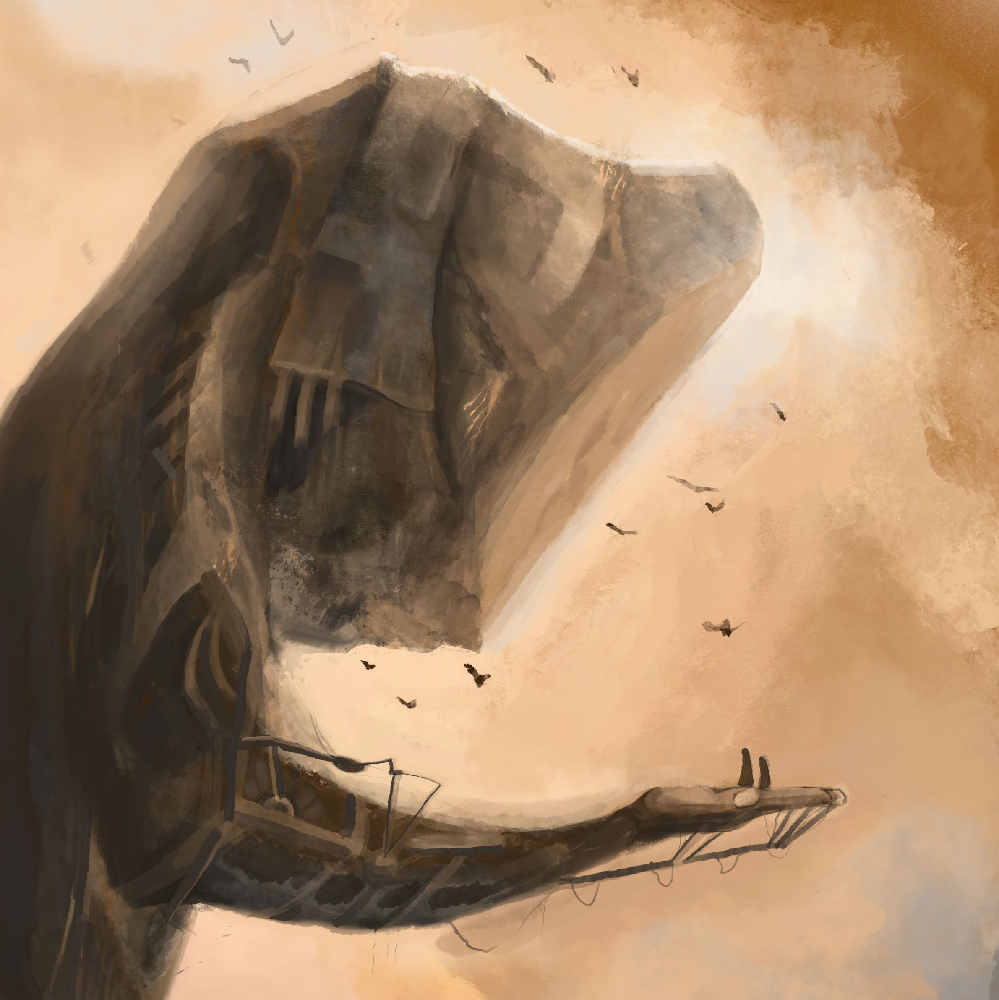
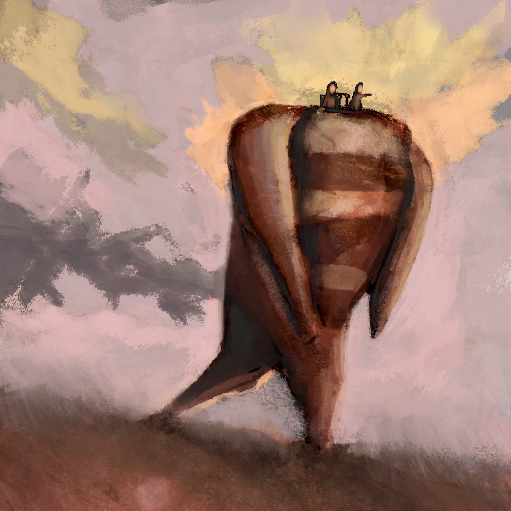
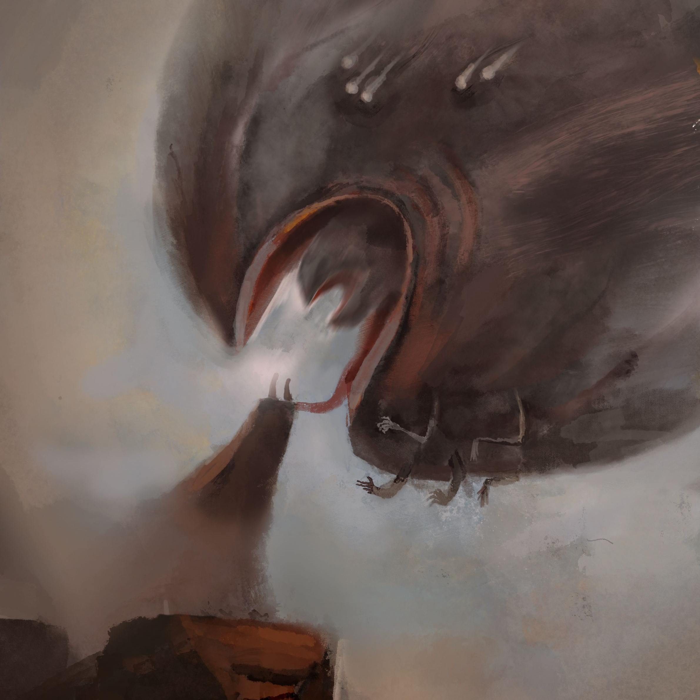

Illustrator
Abby's thesis aims to explore the relationship between fine art practices and concept art. It is a personal study done with both the intent to improve her own capabilities and to also explore the connection between colour and atmosphere in an image. The final pieces presented are comprised of concept art which aims to portray different atmospheric qualities. Digitally painted using the Zorn palette, two undescribed characters face lands strewn with different atmospheric conditions.